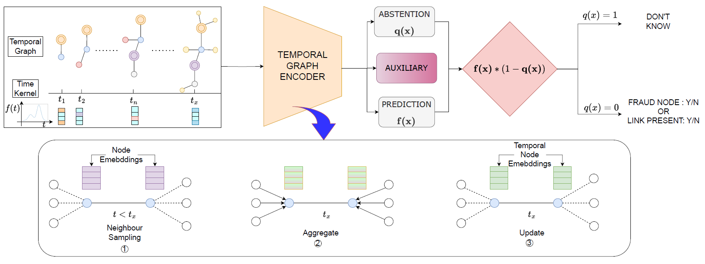
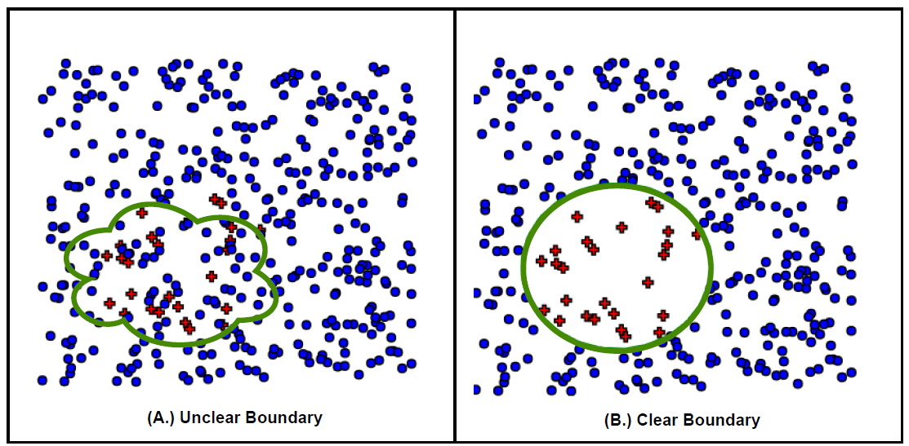
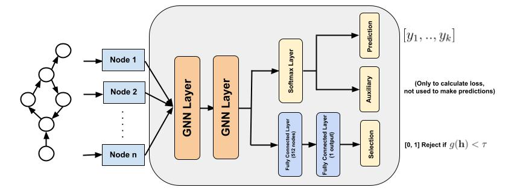
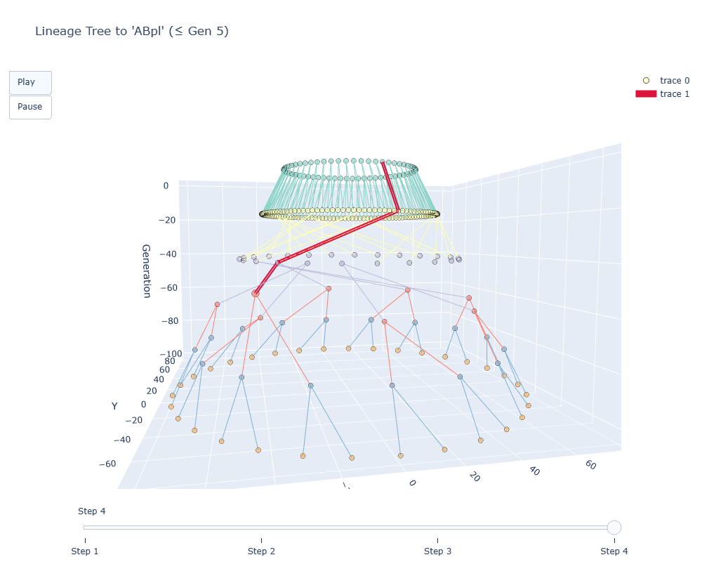
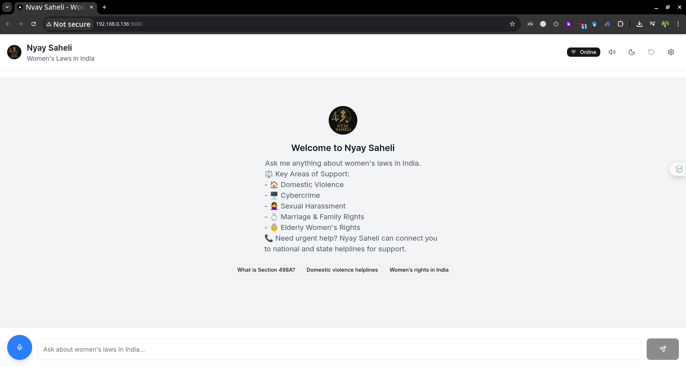
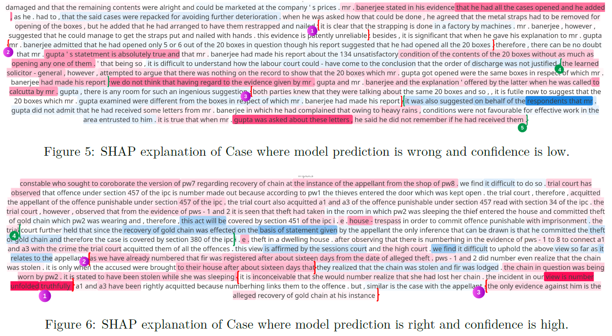
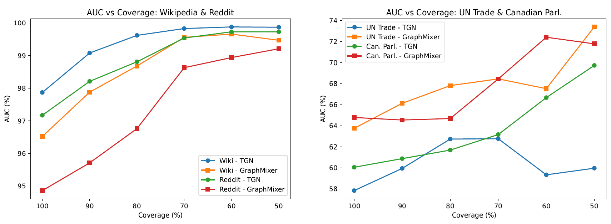
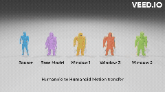
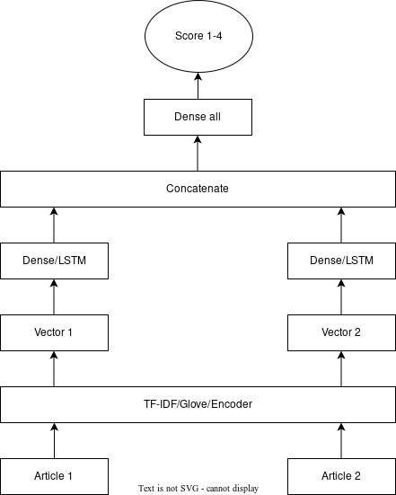

About
I recently completed my M.Sc. by Research in Electronics and Communication Engineering at IIIT Hyderabad, where I conducted research on Graph Neural Networks (GNNs), particularly in the areas of dynamic graphs, uncertainty quantification, and high-stakes decision-making, under the guidance of Prof. Charu Sharma and Prof. Naresh Manwani at the Machine Learning Lab.
I recently completed a Google Summer of Code project with INCF, developing dynamic graph neural networks for modeling C. elegans development.
I completed my Bachelor of Technology in Electrical Engineering from Indian Institute of Engineering Science and Technology, Shibpur. Following my graduation, I briefly worked as an Engineer at Vikram Solar Limited, contributing to production optimization projects.
Research Interests
Recent News
Publications
2025


Confidence First: Reliability-Driven Temporal Graph Neural Networks
KDD 2025 Temporal Graph Learning (TGL) Workshop Accepted

2024
Projects

DevoTG: Developmental Temporal Graph Networks
Google Summer of Code project developing a comprehensive framework for analyzing C. elegans cell division patterns and connectome development using temporal graph neural networks. Combines advanced visualization techniques with state-of-the-art graph neural networks for developmental biology insights.

Nyay Saheli: Conversational RAG for Indian Women
A conversational AI assistant designed to provide empathetic responses and legal guidance to Indian women in multiple Indian languages. Built using Retrieval-Augmented Generation (RAG) techniques to deliver culturally sensitive and legally accurate information for women's rights and safety.

Node Classification With Integrated Reject Option
Introduced NodeCwR framework incorporating cost-based and coverage-based rejection strategies. Achieved 6-19% improvement in prediction accuracy on ILDC dataset for Legal Judgment Prediction.

Predict Confidently, Predict Right: Abstention in Dynamic Graph Learning
Developed novel reject option strategy for CTDGs, allowing model abstention from uncertain predictions. Achieved 10-15% improvement in AUC/AP scores across six dynamic graph datasets.

3D Motion Transfer Across Diverse Character Topologies
Developed method using Graph Convolution Networks for realistic 3D motion transfer between diverse character topologies. Incorporated prior frame encodings to reduce jitter.

Multilingual News Article Similarity Detection Using Siamese Networks
Developed multilingual news similarity detection system. Achieved best result with multilingual DistilBERT (PCC: 0.5683) in SemEval 2022 Task 8.
Experience
Software Developer
Google Summer of Code @ INCF, Remote
Project: DevoTG: Dynamic Graph Neural Networks for Modeling C. elegans Development. Modeled C. elegans embryogenesis and connectome formation using advanced temporal graph methods. Successfully completed all project deliverables including comprehensive framework for developmental biology analysis.
MS Research Fellow
Machine Learning Lab - MLL (IIITH), Hyderabad, India
Conducted research on GNNs, high-stakes applications like legal judgment prediction, disease prediction. Explored continuous time dynamic graphs (CTDGs), reject option classification. Worked on 3D computer vision applications.
Engineer
Vikram Solar Limited, Falta, West Bengal, India
Contributed to Six Sigma project, increasing production by 10%. Involved in bottleneck analysis, DOE in Minitab, and optimization analyses. Led KAIZEN projects, achieving 2% reduction in power consumption.
Teaching
Instructor - Executive Training Program on AIML
ihub-data, IIIT Hyderabad
Coordinated a two-week executive training program. Conducted tutorials on PCA and end-to-end ML model building.
Teaching Assistant - 3D Vision Summer School
CVIT, IIIT Hyderabad
Conducted tutorial on graph neural networks and their applications in 3D vision, especially mesh-based systems.
Curriculum Vitae
Download my complete CV to learn more about my academic background, research experience, and technical skills.
Education
M.Sc in Electronics and Communication Engineering by Research
International Institute of Information Technology, Hyderabad
July 2022 - July 2025 | GPA: 8.29/10
Bachelor of Technology in Electrical Engineering
Indian Institute of Engineering Science and Technology, Shibpur
July 2014 - June 2018 | GPA: 8.02/10
Technical Skills
Programming Languages
Python, C, C++, SQL
ML/DL Libraries
PyTorch, PyG, scikit-learn, TensorFlow, Keras, Transformers
Tools & Software
GitHub, VS Code, Conda, Poetry, UV, Blender, MeshLab, Minitab, MATLAB Simulink